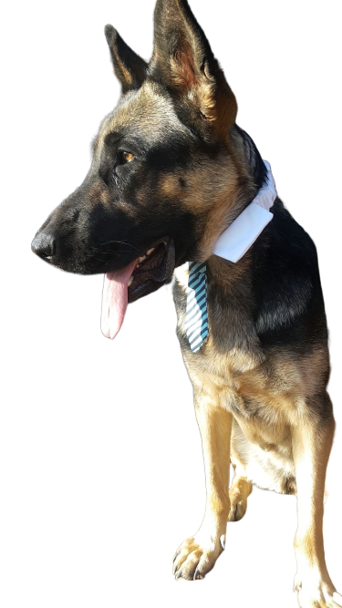

My Story
I am currently a Full-Stack Devloper in the making at Coder Academy, I graduate in February 2020.
As soon as I began to understand the value and oppurtunites presented by the knowledge I was absorbing I become obsessed with programming. I felt like a kid again, all I think about before I sleep is coding and how excited I am for tommorow!
Despite the fact that I would if I could, I dont actually spend 100% of my time coding. Here's a few hoobbies.

This is my dog Jedi! She likes to go for walks atleast once per day.